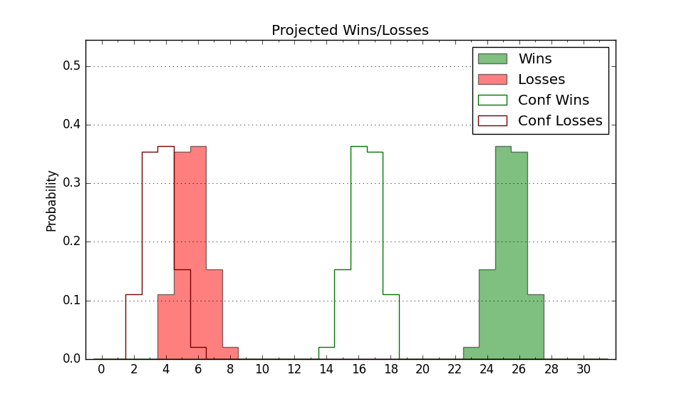

| Home | Game Probabilities | Conferences | Preseason Predictions | Odds Charts | NCAA Tournament |
| City: | Queens, New York | |
| Conference: | Big East (1st)
| |
| Record: | 13-2 (Conf) 22-4 (Overall) | |
| Ratings: | Comp.: 24.0 (26th) Net: 24.1 (26th) Off: 112.4 (83rd) Def: 88.4 (4th) SoR: 88.8 (11th) |
| Remaining | ||||||
|---|---|---|---|---|---|---|
| Date | Opponent | Win Prob | Pred. | |||
| 2/19 | @ DePaul (114) | 77.8% | W 76-66 | |||
| 2/23 | Connecticut (32) | 67.5% | W 73-68 | |||
| 2/26 | @ Butler (71) | 60.4% | W 76-73 | |||
| 3/1 | Seton Hall (206) | 96.6% | W 76-53 | |||
| 3/8 | @ Marquette (28) | 35.4% | L 69-74 | |||
| Previous | Game Score | |||||
| Date | Opponent | Win Prob | Result | Off | Def | Net |
| 11/4 | Fordham (228) | 97.2% | W 92-60 | 0.7 | 3.4 | 4.1 |
| 11/9 | Quinnipiac (220) | 96.9% | W 96-73 | 2.9 | -11.0 | -8.1 |
| 11/13 | Wagner (350) | 99.4% | W 66-45 | -19.6 | -2.0 | -21.6 |
| 11/17 | New Mexico (45) | 74.8% | W 85-71 | 13.2 | -9.0 | 4.2 |
| 11/21 | (N) Baylor (20) | 44.1% | L 98-99 | 7.9 | 2.7 | 10.5 |
| 11/22 | (N) Virginia (104) | 84.8% | W 80-55 | 23.3 | 2.9 | 26.2 |
| 11/24 | (N) Georgia (36) | 57.7% | L 63-66 | -11.1 | -0.9 | -12.0 |
| 11/30 | Harvard (273) | 98.2% | W 77-64 | -5.8 | -12.6 | -18.4 |
| 12/7 | Kansas St. (69) | 83.6% | W 88-71 | 6.8 | -0.4 | 6.4 |
| 12/11 | Bryant (146) | 94.5% | W 99-77 | 13.4 | -13.6 | -0.2 |
| 12/17 | DePaul (114) | 92.3% | W 89-61 | 17.9 | -0.7 | 17.2 |
| 12/20 | @Providence (77) | 63.3% | W 72-70 | -8.1 | -1.3 | -9.4 |
| 12/28 | Delaware (244) | 97.7% | W 97-76 | 7.5 | -16.6 | -9.1 |
| 12/31 | @Creighton (34) | 39.5% | L 56-57 | -17.0 | 12.8 | -4.2 |
| 1/4 | Butler (71) | 83.8% | W 70-62 | -22.9 | 16.2 | -6.7 |
| 1/7 | @Xavier (55) | 53.0% | W 82-72 | 5.9 | 6.4 | 12.4 |
| 1/11 | Villanova (49) | 75.7% | W 80-68 | 12.2 | -4.5 | 7.7 |
| 1/14 | Georgetown (89) | 88.8% | W 63-58 | -17.1 | 2.3 | -14.8 |
| 1/18 | @Seton Hall (206) | 89.3% | W 79-51 | 4.9 | 14.1 | 19.0 |
| 1/22 | Xavier (55) | 79.3% | W 79-71 | -3.1 | -2.4 | -5.5 |
| 1/28 | @Georgetown (89) | 70.0% | W 66-41 | -3.8 | 31.5 | 27.8 |
| 2/1 | Providence (77) | 85.5% | W 68-66 | -15.5 | -1.2 | -16.7 |
| 2/4 | Marquette (28) | 65.1% | W 70-64 | 2.1 | 1.0 | 3.1 |
| 2/7 | @Connecticut (32) | 37.9% | W 68-62 | -1.0 | 18.5 | 17.4 |
| 2/12 | @Villanova (49) | 47.7% | L 71-73 | -4.0 | -15.1 | -19.0 |
| 2/16 | Creighton (34) | 69.0% | W 79-73 | 4.9 | 0.3 | 5.2 |
| Stats & Trends | |||||
|---|---|---|---|---|---|
| Current | Day | Week | Month | Season | |
| Composite | 24.0 | -0.0 | -0.5 | +2.7 | +7.3 |
| Comp Rank | 26 | -- | -1 | +7 | +15 |
| Net Efficiency | 24.1 | -0.0 | -0.6 | +2.4 | -- |
| Net Rank | 26 | -- | -- | +8 | -- |
| Off Efficiency | 112.4 | -0.0 | -0.1 | -0.8 | -- |
| Off Rank | 83 | -- | -4 | -18 | -- |
| Def Efficiency | 88.4 | -0.0 | -0.5 | +3.1 | -- |
| Def Rank | 4 | -- | -- | +11 | -- |
| SoS Rank | 52 | -1 | +2 | +28 | -- |
| Exp. Wins | 25.4 | +0.0 | -0.2 | +2.5 | +6.1 |
| Exp. Conf Wins | 16.4 | +0.0 | -0.2 | +2.5 | +5.5 |
| Conf Champ Prob | 92.8 | -0.0 | +19.7 | +75.8 | +88.2 |

| Advanced Stats | ||
|---|---|---|
| Stat | Value | Rank |
| Off Eff FG % | 0.520 | 133 |
| Off Ast Ratio | 0.167 | 60 |
| Off ORB% | 0.395 | 6 |
| Off TO Rate | 0.127 | 40 |
| Off FT Ratio | 0.332 | 172 |
| Def Eff FG % | 0.440 | 19 |
| Def Ast Ratio | 0.122 | 34 |
| Def ORB% | 0.255 | 64 |
| Def TO Rate | 0.194 | 10 |
| Def FT Ratio | 0.305 | 123 |